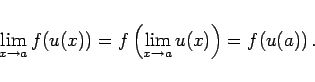

Inhalt Index DeskTop Bronstein

 Funktionen und ihre Darstellung Funktionsbegriff Stetigkeit einer Funktion Eigenschaften stetiger Funktionen
Funktionen und ihre Darstellung Funktionsbegriff Stetigkeit einer Funktion Eigenschaften stetiger Funktionen


Wenn f(u) eine stetige Funktion bezüglich u ist und u(x) eine stetige Funktion bezüglich x und der Wertebereich von u(x) im Definitionsbereich von f(u) enthalten ist, dann ist auch die mittelbare Funktion y=f(u(x)) stetig bezüglich x, und es gilt
|  | (2.31) |
Das bedeutet, daß jede stetige Funktion von einer stetigen Funktion einer Variablen wieder stetig ist.